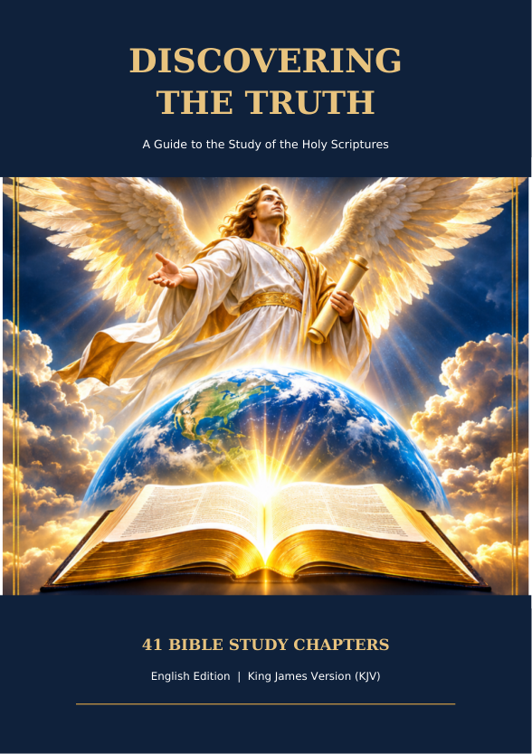
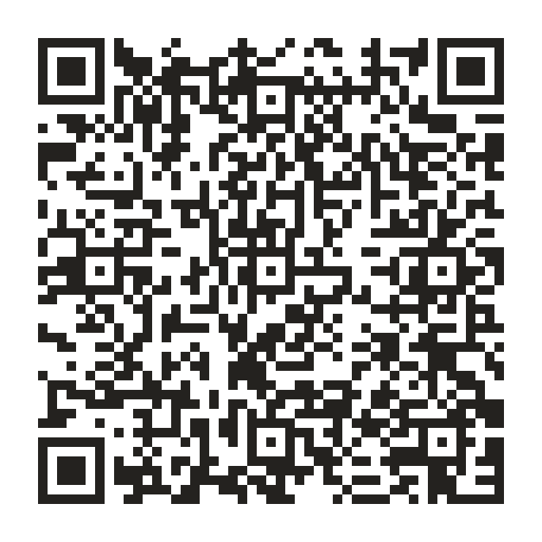

À la découverte de la vérité
Édition française · Études bibliques · Louis Segond 1910
Télécharger gratuitement (PDF)Discovering the Truth — Deux éditions, une même invitation à explorer les Écritures. Téléchargement gratuit, sans inscription.
Édition française · Études bibliques · Louis Segond 1910
Télécharger gratuitement (PDF)
English edition · A Bible Study Guide · King James Version
Free PDF downloadScannez ce code pour retrouver cette page et les éditions les plus récentes.

Les livres pourront être remplacés sans modifier l’adresse du site ni le QR code.